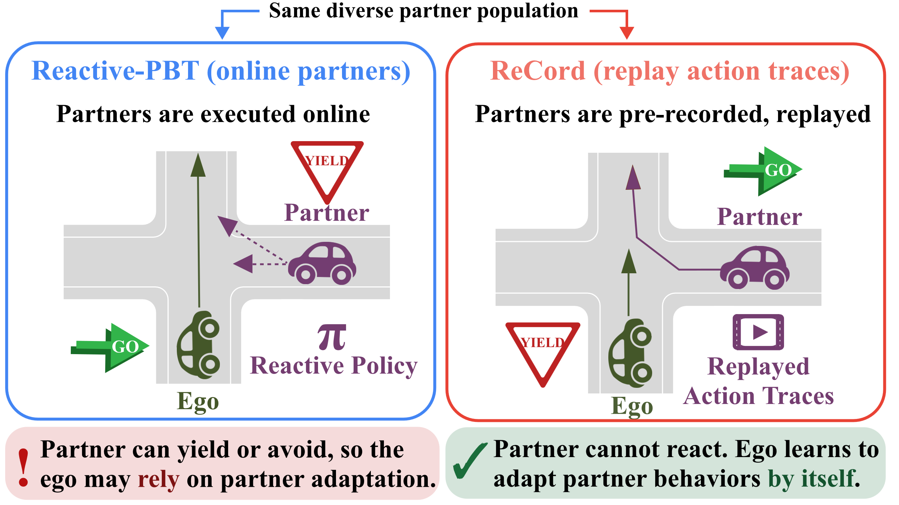
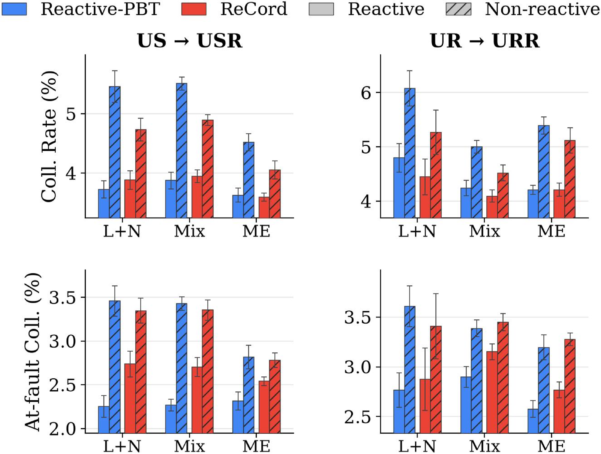
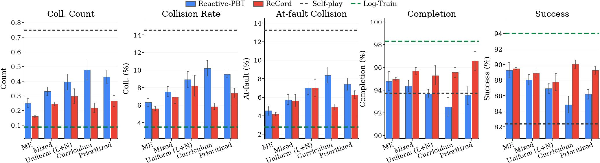
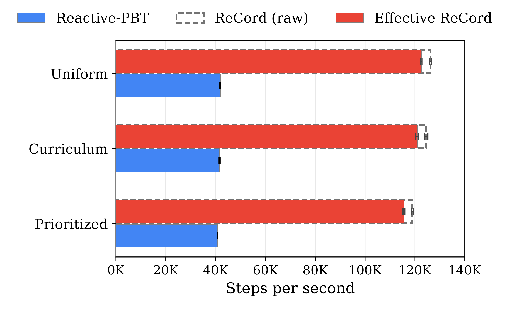

US / USR
Same reward, unseen seeds. US is reactive. USR replays the recorded actions.
In submission · 2026
Ego safety that depends on the partner adapting. A partner that yields or swerves can hide a collision. Replay that same partner from a fixed action trace, and the collision can come back.
MP4 · muted · loop
Video overview
Same map and the same partner. Rows are Reactive-PBT and ReCord. Columns are the partner acting online, then that partner replayed from a fixed action trace. Source ur/compare/2x2/map1001_w6hv4ads_2x2.mp4.
What to look for. Reactive-PBT succeeds while the partner reacts and collides once that partner is replayed. ReCord succeeds in both columns.
Put an MP4 here, the way the Gigapixel overview plays. Not a GIF, and not a PDF. The older yield clip in pictures/record.gif only shows ReCord against Reactive-PBT.
01
Self-play can look nearly solved on held-out scenes, because every agent used the same policy. A partner trained another way, or a human log, is a different problem.
Reactive-PBT trains the ego against diverse pre-trained partners, and those partners keep acting online. They can yield or avoid in response to the ego. A success in that setting may belong to the partner.
Unseen policies and human drivers do not have to react the way a training partner did. A safe ego stays safe when the favorable adaptation is absent. Otherwise a low collision rate does not say who avoided the crash.
02
The same unseen partners are executed twice. Once they act online. Once their recorded actions are replayed. Only the execution changes.
Same reward, unseen seeds. US is reactive. USR replays the recorded actions.
Reward functions the ego did not train against. UR reacts. URR replays.
Recorded human trajectories. They never adapt, and they were not training partners.
MP4 · muted · loop
Scenario · unseen seed
Same 2×2 as the overview, on a different road. Source us/compare/2x2/map8760_wjxyvh7b_2x2.mp4.
What to look for. The collision still appears only when Reactive-PBT loses the partner’s reaction. The road geometry should not be the hero scene.
MP4 · muted · loop
Scenario · human log
One human trajectory, replayed and not reacting. Left is ReCord, right is Reactive-PBT. Not a policy 2×2, and not a clip from the US or UR sets.
What to look for. ReCord keeps a gap the reactive policy closes by colliding. The partner never yields in response.
The reactivity reliance gap is how much collision rises when execution switches from reactive to replay. A smaller gap only counts if reactive performance stays intact.
03
ReCord records action traces from the partner population before ego training, then replays those actions instead of running partner policies online. A replayed partner starts from the same initial state and follows the stored actions. Its next action does not depend on what the ego just did. Collisions do not cut the trace short, so the recorded behavior plays out. The ego has to coordinate with that fixed partner.

Reactive-PBT
Partner policy runs online
The partner sees the evolving scene, including the ego, and can yield or swerve in response.
ReCord
Action trace replayed
The partner’s actions were stored in advance. Ego behavior cannot recruit a new reaction from that partner.
04
On an L+N population with uniform sampling, four seeds. Each arrow is Reactive-PBT, then ReCord. The first two numbers are collision-rate gaps.
Unseen-seed gap
1.74 → 0.85 pp
USR minus US. Non-reactive collision rate falls from 5.46% to 4.73%.
Unseen-reward gap
1.28 → 0.82 pp
URR minus UR. Non-reactive collision rate falls from 6.08% to 5.26%.
Time to brake
−0.123 → +0.130 s
On human log-replay. ReCord still has a brake-only way out, on average.

Under reactive unseen-seed partners, Reactive-PBT still has the lower at-fault collision rate and the higher success rate. The smaller gap is read together with those numbers.

On human log-replay, ReCord lowers collision count, collision rate, and at-fault rate relative to Reactive-PBT across the populations and sampling strategies we tested, while completion and success stay comparable or improve. Log-Train, trained directly on human trajectories, remains the specialist against human logs. It drops further when Fast/Slow partners switch from reactive to replay. ReCord improves human-log coordination without human trajectories in training, and stays more robust to those non-reactive policy partners.
The same gap reduction shows up for mixed and maximum-entropy populations, and for prioritized and curriculum sampling.
05
ReCord does not run partner policies online, so the same training run moves about three times as many steps. The gap holds for uniform, prioritized, and curriculum sampling.
126K vs 42K
steps per second · uniform sampling · one RTX 3090
126K is ReCord. 42K is Reactive-PBT. Building the replay corpus once takes about 30 minutes. Spread over the full training budget, that is under 3% overhead, and the effective rate is still about 2.9×.

ReCord: Replay Coordination for Safe and Robust Population-Based Training in Autonomous Driving appeared at the Trustworthy AI for Good workshop at ICML 2026. Workshop PDF
06
Fields stay empty until the citation is public.
@inproceedings{,
title = {},
author = {},
booktitle = {},
year = {}
}